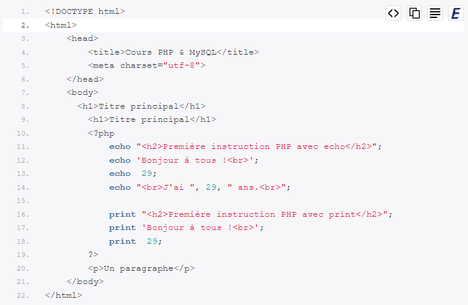
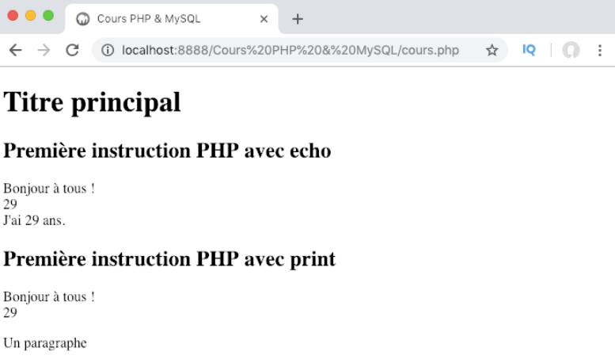

Définition et rôle du PHP
Le terme PHP est l’acronyme de « PHP Hypertext Preprocessor ».
Le premier « P » de PHP est en effet lui-même l’abréviation de « PHP », une curiosité qui ne va pas présenter une grande importance pour nous.
Le PHP va nous permettre de créer des pages qui vont être générées dynamiquement.
En d’autres mots, grâce au PHP, nous allons pouvoir afficher des contenus différents sur une même page en fonction de certaines variables : l’heure de la journée, le fait que l’utilisateur soit connu et connecté ou pas, etc.
Pour illustrer cela, prenons l’exemple d’un espace client sur un site web e-commerce.
Un utilisateur arrive sur un site e-commerce sur lequel il a déjà commandé et crée un espace client. Lors de son arrivée sur le site, il dispose d’un formulaire de connexion à son espace client.
Il va alors devoir fournir des informations (généralement un pseudonyme et un mot de passe) pour pouvoir se connecter et accéder à son espace client.
Cet espace client est personnalisé : il va certainement contenir l’historique des commandes de l’utilisateur, son profil avec ses informations de facturation et son adresse de livraison, etc.
Ici, lorsque l’utilisateur rentre ses informations de connexion, celles-ci vont être traitées et analysées en PHP.
On va vérifier si les informations sont bonnes et si c’est le cas récupérer des informations spécifiques à cet utilisateur et générer dynamiquement les pages de son espace client avec ces informations.
Lorsqu’un utilisateur fournit des informations comme une adresse, un numéro de téléphone ou passe une commande, les données sont généralement enregistrées dans ce qu’on appelle une base de données.
Le PHP va également nous permettre d’aller récupérer des données dans une base de données pour s’en resservir.
De plus, notez que le PHP va s’exécuter côté serveur. Il fait ainsi partie des langages qu’on nomme « server side » en opposition aux langages « client side » qui s’exécutent côté client.
Sites statiques et sites dynamiques
Les langages de programmation axés web peuvent être catégorisés selon deux grands types de classement :
- Langages statiques VS langages dynamiques ;
- Langages avec exécution côté client VS langages avec exécution côté serveur.
Les sites dits statiques se caractérisent par le fait qu’ils sont… statiques : ils ne possèdent ni interaction, ni la capacité de s’adapter aux visiteurs.
Le code des différentes pages ne va pas changer en fonction d’un utilisateur ou d’une autre variable.
Un site de type “CV” par exemple, ou un site servant simplement à présenter ou à donner des informations sur une chose en particulier vont généralement être des sites statiques car il n’y a aucune interaction ni adaptation dynamique avec le visiteur.
Un site créé uniquement en HTML et en CSS par exemple sera toujours statique.
Les sites dynamiques, en revanche, vont pouvoir fournir des pages différentes pour chaque visiteur ou selon différentes contraintes et vont nous permettre d’interagir avec l’utilisateur en lui permettant de nous envoyer des données par exemple.
De nombreux langages vont nous permettre de créer des sites dynamiques, chacun avec leurs points forts et leurs faiblesses et leur champ d’application.
Dans ce cours, nous nous concentrons sur le binôme certainement le plus connu parmi ces langages : le PHP qui va être utile pour tout ce qui est calcul / traitement des données et le MySQL qui va nous servir à gérer nos bases de données.
Afficher un résultat en PHP avec une instruction echo ou print
Commençons déjà par définir ce qu’on appelle « structure de langage » (« language construct » en anglais) afin de partir sur de bonnes bases.
Une structure de langage correspond simplement à une partie de la syntaxe d’un langage.
La syntaxe d’un langage informatique correspond à un ensemble de mots clefs au sens bien défini par le langage. A partir de cette syntaxe, et en combinant les mots clefs, nous allons pouvoir construire des expressions.
Les structures de langage sont en d’autres termes les atomes d’un langage informatique : ce sont les unités de base d’un langage qu’on va pouvoir utiliser pour construire des expressions.
De nombreuses personnes considèrent à tort que les structures de langage echo et print sont des fonctions. Or, les fonctions et les structures de langage sont deux types différents d’objets qui ne vont pas être traités de la même façon.
A votre niveau, il risque néanmoins d’être compliqué de bien comprendre et de bien vous représenter ce qu’est une structure de langage.
Ne vous inquiétez pas, c’est tout à fait normal : bien souvent, en code, une notion nécessite de connaitre un ensemble d’autres notions pour être bien comprise tandis que les autres notions ont besoin de cette première notion pour être comprises… C’est toute la difficulté lorsqu’on commence à apprendre un nouveau langage !
Les structures de langage echo et print
Les structures de langage echo et print vont nous permettre d’afficher un résultat en PHP.
Pour cela, nous allons écrire notre echo ou notre print suivi de ce qu’on souhaite afficher et suivi d’un point-virgule pour terminer l’instruction, en plaçant le tout dans une balise PHP.
Regardez plutôt l’exemple suivant qu’on va immédiatement expliquer :


Nous pouvons noter plusieurs choses à partir de l’exemple précédent. Déjà, vous pouvez observer qu’on peut tout à fait passer des balises HTML dans ce qu’on souhaite afficher.
Ces balises HTML seront lues comme les autres par le navigateur.
Ensuite, vous pouvez remarquer que j’utilise parfois des apostrophes droites, parfois des guillemets droits et d’autres fois rien du tout pour entourer le contenu qui devra être affiché.
Ici, vous pouvez retenir que les chaines de caractères (c’est-à-dire les contenus de type texte) doivent toujours être entourés d’un couple d’apostrophes ou de guillemets pour pouvoir être affichées.
Cela n’est pas nécessaire pour afficher un chiffre.